پودمان ۳: صفحات وب تعاملی
تابعها صفحه ۲۱۹
اصول تعریف تابع در جاوااسکریپت به شرح زیر است :
در تعریف تابع ابتدا عبارت کلیدی function و سپس نام آن نوشته میشود.
نام تابع باید با حرف کوچک شروع شود و هر کلمه جدید با حرف بزرگ آغاز شود.
پارامترهای ورودی تابع درون پرانتز مشخص میشود.
تعداد پارامترها میتواند صفر، یک یا بیشتر باشد. مجموعه دستورات تابع درون آکولاد نوشته میشوند.
خروجی تابع معمولاً توسط تابع return به محل فراخوانی برگردانده میشود.
دستورات درون تابع زمانی اجرا میشوند که تابع فراخوانی شود.
برای فراخوانی تابع باید از نام تابع به همراه آرگومانهای ورودی استفاده شود. شکل کلی فراخوانی تابع بهصورت زیر است:
مثال
در مثال زیر تابعی به نام calculateCartTotal با سه پارامتر ورودی price3, price2, price1 ایجاد شده است. تابع calculateCartTotal مجموع مقادیر این سه پارامتر را محاسبه و درون متغیر total ذخیره میکند. دستور return مقدار متغیر total را به محل فراخوانی بازمیگرداند.
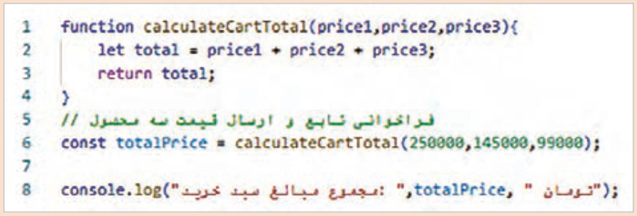
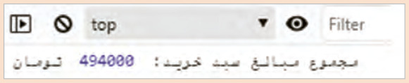
نکته
پارامترها متغیرهایی هستند که در هنگام تعریف تابع استفاده میشوند. در مثال فوق متغیرهای price3, price2, price1 پارامتر ورودی تابع هستند. آرگومان به مقادیری گفته میشود که هنگام فراخوانی برای تابع ارسال میشوند. به عبارت دیگر آرگومانها مقادیری هستند که به پارامترهای تابع نسبت داده میشوند.
صفحه ۲۲۰
کار کارگاهی
ایجاد تابع و فراخوانی آن
فایل جدیدی با نام workshop8.html ایجاد کنید و تابع calculateCartTotal را درون آن بنویسید. سپس تابع را با آرگومانهای ورودی دلخواه فراخوانی کنید.
یک تابع لزوماً دارای مقدار بازگشتی نیست. یک تابع میتواند با هدف اجرای مجموعهای از دستورالعملها نوشته شود، بدون اینکه مقداری را به محل فراخوانی بازگرداند. در اینصورت نیازی به استفاده از دستور return نخواهد بود. در مثال زیر تابع showCartTotal سه مقدار را بهعنوان پارامتر ورودی دریافت میکند، حاصل جمع آنها را محاسبه کرده و نتیجه را در کنسول مرورگر نمایش میدهد؛ اما هیچ مقداری را به محل فراخوانی برنمیگرداند.
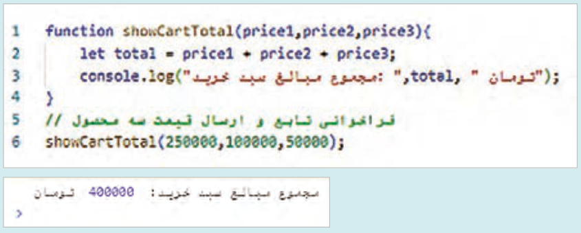
توابع آماده جاوااسکریپت (Built-in Functions )
جاوااسکریپت دارای مجموعهای از توابع آماده است که برای انجام عملیات مختلف بهکار میروند. توابع آماده جاوااسکریپت به برنامهنویسان امکان میدهند که بهراحتی دادهها را مدیریت کرده و وظایف پیچیده را به سادگی پیادهسازی کنند. این توابع شامل توابع ریاضی، رشتهای، آرایه، اشیا، ورودی-خروجی و تاریخ و زمان است که در این بخش به معرفی آنها پرداخته میشود.
کار کارگاهی
به کارگیری توابع ریاضی جاوااسکریپت
توابع ریاضی جاوااسکریپت که درون شیء Math سازماندهی شدهاند، مجموعهای از ابزارهای قدرتمند و کارآمد برای انجام محاسبات پیچیده ریاضی هستند. دسترسی به توابع ریاضی بهصورت نقطهای Math.functionName() امکانپذیر است و استفاده از آنها نهتنها کدنویسی را کوتاهتر و خواناتر میکند، بلکه از خطاهای احتمالی در پیادهسازی دستی الگوریتمها نیز جلوگیری کرده و عملکرد بهینهتری در برنامههای کاربردی ایجاد مینماید. چند نمونه از توابع پر کاربرد ریاضی در جاوااسکریپت به شرح زیر است:
Math.abs(): قدرمطلق مقدار آرگومان ورودی را برمیگرداند.
Math.round(): مقدار آرگومان ورودی را گرد میکند.
Math.random(): یک عدد تصادفی بین 0 (شامل) تا 1 (غیرشامل) برمیگرداند.
Math.max(): بزرگترین عدد را از بین آرگومانهای ورودی برمیگرداند.
Math.min(): کوچکترین عدد را از بین آرگومانهای ورودی برمیگرداند.
صفحه ۲۲۱
کار کارگاهی (ادامه)
در طراحی فروشگاههای اینترنتی، توابع ریاضی جاوااسکریپت نقشی حیاتی ایفا میکنند، زیرا مدیریت عملیات اصلی مانند محاسبه قیمت نهایی پس از اعمال تخفیف، جمعبندی اقلام سبد خرید و تعیین هزینههای حملونقل مستلزم استفاده دقیق از این توابع است. بهمنظور آشنایی با نحوۀ فراخوانی و عملکرد این توابع، فایلی بهنام shopping-cart.html ایجاد کنید و اسکریپت زیر را در آن بنویسید. سپس نتایج بهدستآمده را در کلاس بررسی و تحلیل کنید.
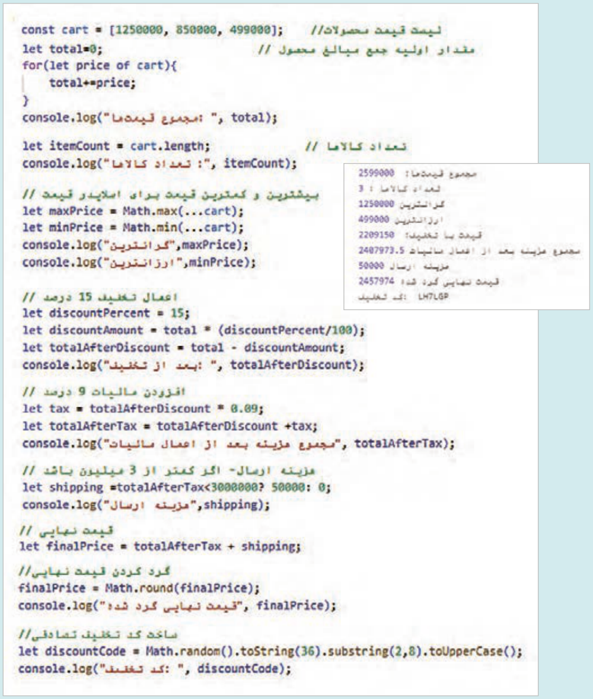
صفحه ۲۲۲
کار کارگاهی
به کارگیری توابع رشته ای در جاوااسکریپت
توابع و ویژگیهای رشتهای جاوااسکریپت، ابزارهای ضروری برای پردازش و مدیریت متن هستند که امکان قالببندی و تغییر رشتهها را با دقت و کارایی بالا فراهم میکنند. این متدها امکان اعتبارسنجی دادههای ورودی کاربران، بهینهسازی متن برای نمایش یا ارسال به سرور را فراهم میکنند. برخی از توابع رشتهای جاوااسکریپت به شرح زیر است:
toUpperCase(): حروف رشته ورودی را به حالت بزرگ در میآورد.
indexOf(): اندیس موقعیت کاراکتر یا رشتۀ داخل پرانتز را در رشته اصلی برمیگرداند.
substring(): یک زیررشته را از رشته اصلی برمیگرداند. ورودیهای این تابع اندیس ابتدا و انتهای زیر رشته است.
split(): رشته را بر اساس جداکننده داخل پرانتز (مانند کاما) تقسیم میکند و آرایهای از رشتهها را برمیگرداند.
replace(): دو رشته را به عنوان ورودی دریافت کرده و رشتۀ دوم (/) را بهجای رشتۀ اول (-) در رشته اصلی قرار میدهد. این تابع در اولین موقعیت یافتن رشتۀ مورد نظر(-)، جایگزینی رشته را انجام میدهد. startsWith(): وجود یک حرف یا رشته را در ابتدای یک متغیر رشتهای بررسی میکند.
شیء string دارای یک ویژگی بهنام length
console.log(str1.length);
فایلی به نام user-info.html ایجاد کنید و اسکریپت زیر را برای آشنایی با عملکرد توابع رشتهای بنویسید:
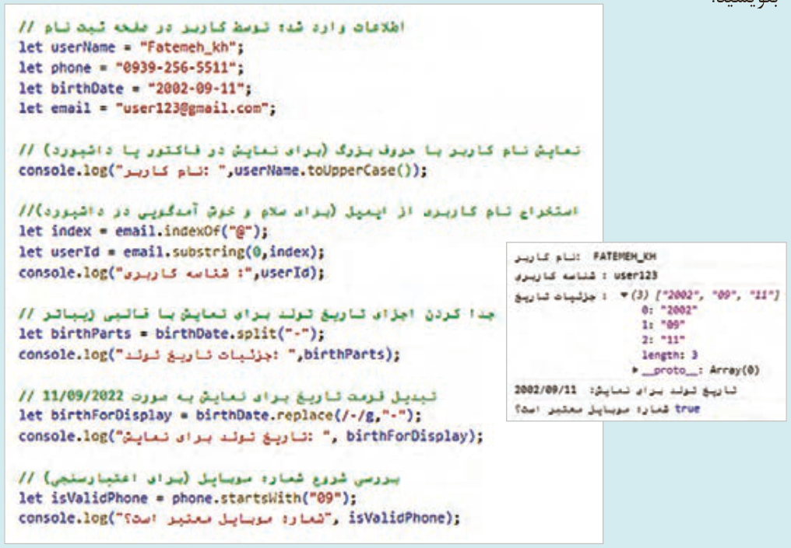
صفحه ۲۲۳
بیشتر بدانید
بهکارگیری توابع آرایه در جاوااسکریپت
توابع آرایهای جاوااسکریپت، ابزارهای مناسبی برای مدیریت، جستوجو، فیلتر و تبدیل دادههای ساختاریافته هستند. به کمک این متدها میتوان اعمال مختلفی همچون مرتبسازی (sort )، فیلتر کردن(filter ) و استخراج اطلاعات، لیستها را به سادگی و بدون نیاز به نوشتن حلقههای پیچیده، انجام داد. برخی از توابع آرایه به شرح زیر است:
push(): برای اضافه کردن یک یا چند عنصر به انتهای آرایه استفاده میشود.
slice(): برای استخراج بخشی از آرایه و ایجاد یک آرایه جدید بهکار میرود.
filter(): آرایه جدیدی را با فیلتر کردن عناصر آرایه اصلی براساس یک شرط خاص ایجاد میکند. sort(): مرتبسازی عناصر آرایه را انجام میدهد.
ویژگی length تعداد عناصر موجود در آرایه را برمیگرداند. بهطور مثال عبارت names.length عدد 6 را برمیگرداند.
فایلی به نام customer-list.html ایجاد کنید و اسکریپت زیر را برای آشنایی با عملکرد توابع آرایه بنویسید. نتایج اسکریپت را در کلاس بررسی و تحلیل کنید.
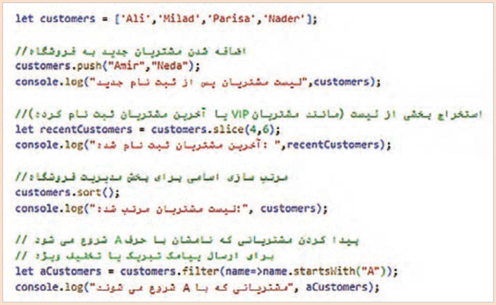
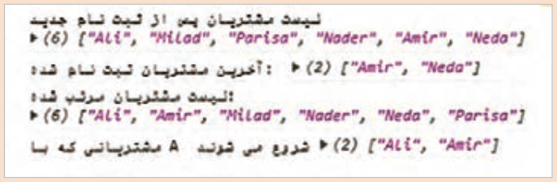
صفحه ۲۲۴
بیشتر بدانید
به کارگیری توابع و دستورات ورودی و خروجی جاوااسکریپت
توابع ورودی و خروجی (I/O) در جاوااسکریپت، پل ارتباطی بین برنامه و دنیای خارج از آن هستند و امکان ایجاد یک تجریه تعاملی و پویا را برای کاربران فراهم میکنند. در محیط مرورگر، این توابع برای دریافت ورودی از کاربر، نمایش جعبه پیغام، نمایش داده در کنسول و دریافت تأیید کاربر استفاده میشوند.
برای بررسی عملکرد توابع ورودی و خروجی، یک فایل جدید با نام user-interaction.html ایجاد کنید و کد زیر را در بخش body بنویسید.
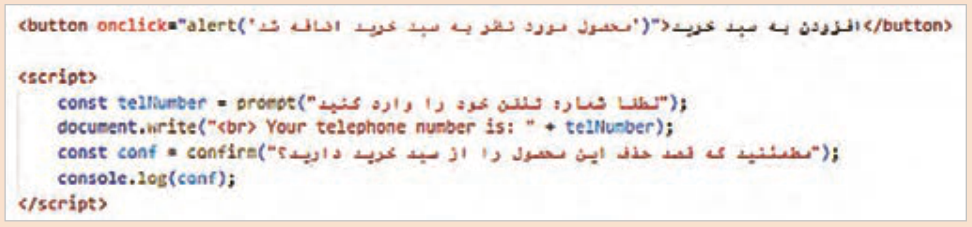
فایل را ذخیره کنید و نتیجه را در مرورگر مشاهده کنید.
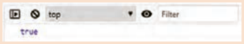
console.log()
prompt()
alert()OK .
confirm()OK و Cancel . مقدار بازگشتی تابع True یا False است.
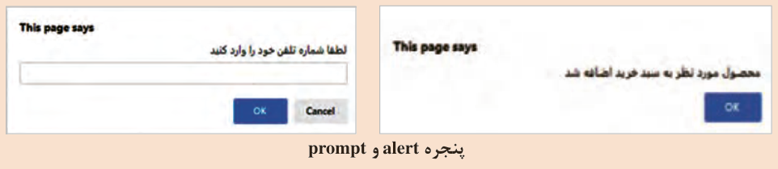
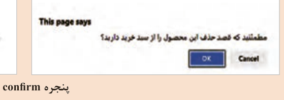
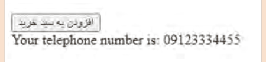
document.write()
Page 219
The principles of defining a function in JavaScript are as follows :
In defining a function, first the key phrase function and then its name are written.
The name of a function must start with a lowercase letter and each new word must start with a capital letter.
The input parameters of the function are specified inside the parentheses.
The number of parameters can be zero, one or more. The set of statements of the function is written inside braces.
The output of the function is usually returned to the place of the call by the return statement.
The statements inside a function run when the function is called.
To call a function, the name of the function with the input arguments must be used. The general form of calling a function is as follows:
Example
In the following example a function named calculateCartTotal is created with three input parameters price1, price2, price3. The function calculateCartTotal calculates the sum of the values of these three parameters and stores it in the variable total. The return statement gives the value of the variable total back to the place of the call.
Note
Parameters are variables used when defining a function. In the example above the variables price1, price2, price3 are the input parameters of the function. Arguments are the values sent to the function when it is called. In other words, arguments are values that are assigned to the parameters of the function.
Page 220
Workshop
Creating a function and calling it
Create a new file named workshop8.html and write the function calculateCartTotal in it. Then call the function with input arguments of your choice.
A function does not necessarily have a return value. A function can be written with the aim of running a set of instructions without returning a value to the place of the call. In that case there is no need to use the return statement. In the following example the function showCartTotal receives three values as input parameters, calculates their sum and shows the result in the browser console; but it returns no value to the place of the call.
JavaScript's Built-in Functions
JavaScript has a set of ready-made functions used for different operations. JavaScript's ready-made functions let programmers manage data easily and implement complex tasks simply. These functions include mathematical, string, array, object, input-output and date and time functions, which are introduced in this section.
Workshop
Using JavaScript's mathematical functions
JavaScript's mathematical functions, which are organised inside the Math object, are a set of powerful and efficient tools for doing complex mathematical calculations. The mathematical functions can be reached with the dot form Math.functionName(), and using them not only makes the coding shorter and more readable, but also prevents possible errors in implementing algorithms by hand and creates more optimal performance in applications. Some commonly used mathematical functions in JavaScript are as follows:
Math.abs(): returns the absolute value of the input argument.
Math.round(): rounds the value of the input argument.
Math.random(): returns a random number from 0 (included) up to 1 (not included).
Math.max(): returns the largest number among the input arguments.
Math.min(): returns the smallest number among the input arguments.
Page 221
Workshop (continued)
In designing online shops, JavaScript's mathematical functions play a vital role, because managing the main operations, such as calculating the final price after applying a discount, totalling the items of the cart and deciding the shipping cost, needs the exact use of these functions. To get to know how these functions are called and how they work, create a file named shopping-cart.html and write the following script in it. Then check and analyse the results you get in class.
Page 222
Workshop
Using string functions in JavaScript
JavaScript's string functions and properties are essential tools for processing and managing text, which make formatting and changing strings possible with high accuracy and efficiency. These methods make it possible to validate the users' input data and to optimise text for display or sending to the server. Some of JavaScript's string functions are as follows:
toUpperCase(): turns the letters of the input string into capital letters.
indexOf(): returns the index of the position of the character or string inside the parentheses in the main string.
substring(): returns a substring of the main string. The inputs of this function are the starting and ending index of the substring.
split(): splits the string based on the separator inside the parentheses (such as a comma) and returns an array of strings.
replace(): takes two strings as input and puts the second string (/) in place of the first string (-) in the main string. This function does the replacement at the first position where the wanted string (-) is found. startsWith(): checks for the existence of a letter or string at the start of a string variable.
The string object has a property named length , which gives the length of a string. Based on this, the following statement shows the value 11.
console.log(str1.length);
Create a file named user-info.html and write the following script to get to know how the string functions work:
Page 223
Learn more
Using array functions in JavaScript
JavaScript's array functions are suitable tools for managing, searching, filtering and converting structured data. With the help of these methods various operations such as sorting (sort), filtering (filter) and extracting information from lists can be done easily without needing to write complex loops. Some of the array functions are as follows:
push(): used to add one or more elements to the end of an array.
slice(): used to extract a part of an array and create a new array.
filter(): creates a new array by filtering the elements of the main array based on a certain condition. sort(): sorts the elements of the array.
The length property returns the number of elements in the array. For example the expression names.length returns the number 6.
Create a file named customer-list.html and write the following script to get to know how the array functions work. Check and analyse the results of the script in class.
Page 224
Learn more
Using JavaScript's input and output functions and statements
Input and output (I/O) functions in JavaScript are the bridge between the program and the world outside it, and make an interactive and dynamic experience possible for users. In the browser environment, these functions are used to receive input from the user, show a message box, show data in the console and receive the user's confirmation.
To check how the input and output functions work, create a new file named user-interaction.html and write the following code in the body section.
Save the file and see the result in the browser.
console.log()
prompt()
alert()
confirm()
document.write()